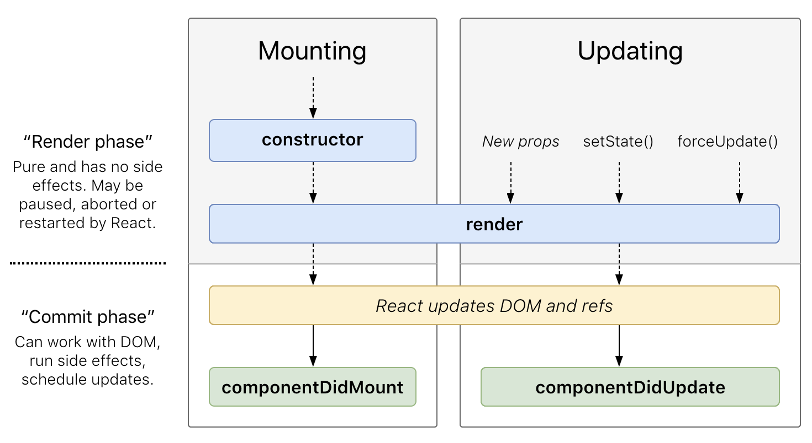
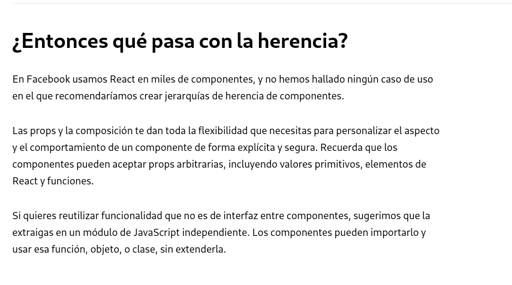

<!DOCTYPE html>
<html lang="en">
  <head>
    <meta charset="utf-8" />
    <meta name="viewport" content="width=device-width, initial-scale=1.0, maximum-scale=1.0, user-scalable=no" />

    <title>Cursos 2019</title>
    <link rel="stylesheet" href="./css/reveal.css" />
    <link rel="stylesheet" href="./css/theme/solarized.css" id="theme" />
    <link rel="stylesheet" href="./css/highlight/zenburn.css" />
    <link rel="stylesheet" href="./css/print/paper.css" type="text/css" media="print" />

  </head>
  <body>
    <div class="reveal">
      <div class="slides"><section  data-markdown><script type="text/template">

# Curso 2019

Capacitación de JavaScript

[//]: <> ()
[//]: <> ()


</script></section><section ><section data-markdown><script type="text/template">
## Sobre el curso
</script></section><section data-markdown><script type="text/template">
### Docentes

- Ulises Jeremias Cornejo Fandos
- Lucas Di Cunzolo
</script></section><section data-markdown><script type="text/template">
### Objetivos

- Tener una idea general de JS vanilla
- Desarrollar una aplicación React
- Desarrollar un backend en express
</script></section><section data-markdown><script type="text/template">
### Certificaciones

- Desarrollador Frontend React
- Desarrollador Backend Express y Node
- Desarrollador Full Stack JS
</script></section><section data-markdown><script type="text/template">
### Requisitos para las certificaciones

- Asistir al curso
- Contar con una entrega que demuestre los contenidos mínimos de la certificación
  - Las entregas puede contar con reentregas dependiendo el caso
</script></section></section><section ><section data-markdown><script type="text/template">
## Introducción a JavaScript


</script></section><section data-markdown><script type="text/template">
### Conceptos Básicos

- Tipado Dinámico
- Paradigmas
  - Objetos
  - Funcional
  - Imperativo
</script></section><section data-markdown><script type="text/template">
### Características del lenguaje

Entorno de ejecución

- Cliente
- Servidor
- ¿más?
</script></section><section data-markdown><script type="text/template">
### De JavaScript a los nuevos estandares

<aside class="notes"><ul>
<li>Vanilla</li>
<li>ECMAScript</li>
<li>Otros transpilados (TypeScript, ...)</li>
</ul>
</aside></script></section><section data-markdown><script type="text/template">
### Comparativas - Vanilla vs ES6

- Require/Import
- "Clases"
- Deconstrucción de valores
- Parámetros rest
</script></section></section><section ><section data-markdown><script type="text/template">
## JavaScript en la Web
</script></section><section data-markdown><script type="text/template">
- DOM
- Objetos predefinidos
  - window
  - document
  - console (accesible en todo entorno de JS)
  - ...
- Selectores
- Eventos

<aside class="notes"><p>Ejemplos</p>
</aside></script></section><section data-markdown><script type="text/template">
### Forma antigua de usar JS

- JQuery / Selectors
- Eventos
- Lenguaje para "efectos" en la web
</script></section><section data-markdown><script type="text/template">
### Problematicas comunes de este enfoque

- index.html con muchos tags script
  - Dependencias cruzadas?
  - No hay nada parecido a un import, require o include en un navegador
- No queremos programar mas en Vanilla. Queremos un require!
  - Transpilación
</script></section><section data-markdown><script type="text/template">
### Soluciones
</script></section></section><section ><section data-markdown><script type="text/template">
### Nuevo enfoque de programación con JS
</script></section><section data-markdown><script type="text/template">
- Uso de manejador de dependecnias
  - npm
  - yarn
</script></section><section data-markdown><script type="text/template">
- Uso de un lenguaje que transpile a JS
  - EcmaScript
  - TypeScript
  - CoffeeScript
  - ...
</script></section><section data-markdown><script type="text/template">
- Uso de herramientas para manejar los archivos estaticos
  - Webpack
  - Parcel
  - Gulp
  - ...
</script></section><section data-markdown><script type="text/template">
### Errores de programación

JavaScript es un lenguaje interpretado sin tipos, propenso a errores en runtime

¿Como hacer para evitar errores?
</script></section><section data-markdown><script type="text/template">
### ESLint

¿Por qué termina siendo necesario aplicar reglas de lint?

¿Por qué se debe seleccionar un estandar que se adapte a nuestro proyecto?
</script></section><section data-markdown><script type="text/template">
### ESLint en diferentes tipos de proyectos JavaScript

- Backend
- Fronted
- Extensiones web
- ...

<aside class="notes"><p>Comentar diferentes estandares de ESLint</p>
<ul>
<li><a href="https://github.com/airbnb/javascript">aribnb</a></li>
<li><a href="https://github.com/search?q=JavaScript+Style+Guide">github</a></li>
</ul>
</aside></script></section></section><section ><section data-markdown><script type="text/template">
## Frontend
</script></section><section data-markdown><script type="text/template">
### Librerías y Frameworks

- Angular
- Vue
- Meteor
- React
</script></section></section><section ><section data-markdown><script type="text/template">
## React
</script></section><section data-markdown><script type="text/template">
### Principales características

- Programacion basada en componentes
- Declarativo

<aside class="notes"><p><a href="https://reactjs.org">React</a></p>
<p>Ver primeras componentes, ejemplos</p>
</aside></script></section><section data-markdown><script type="text/template">
## Construcción

- Component
- PureComponent

<aside class="notes"><p>Mostrar la diferencia entre crear componentes desde la clase y desde una función render</p>
</aside></script></section><section data-markdown><script type="text/template">
## Propiedades

Todas las componentes pueden recibir propiedades.

Estas propiedades son **inmutables**

Veremos luego que estas propiedades pueden estar tipadas
</script></section><section data-markdown><script type="text/template">
## Estado interno

Casi todas las componentes pueden acceder y modificar su estado interno.

Este estado interno se accede directamente desde `this.props`

Pero se modifica mediante la función `this.setState`

**Nunca se debe modificar directamente el estado interno**
</script></section><section data-markdown><script type="text/template">
## Ciclo de vida básico



<aside class="notes"><p><a href="http://projects.wojtekmaj.pl/react-lifecycle-methods-diagram/">Ciclos de vida</a></p>
</aside></script></section><section data-markdown><script type="text/template">
## Ciclo de vida completo sin errores


</script></section><section data-markdown><script type="text/template">
## Ciclo de vida para errores

- `static getDerivedStateFromError`
- `componentDidCatch`
</script></section><section data-markdown><script type="text/template">
## Eventos
</script></section><section data-markdown><script type="text/template">
## Renderizado condicional
</script></section><section data-markdown><script type="text/template">
## Renderizado de componentes mediante listas
</script></section><section data-markdown><script type="text/template">
## Composición
</script></section><section data-markdown><script type="text/template">
## Jerarquía de componentes

React es una librería orientada a objetos

Entonces se prefiere la jerarquía de componentes para evitar código repetido
</script></section><section data-markdown><script type="text/template">

</script></section><section data-markdown><script type="text/template">

</script></section></section><section ><section data-markdown><script type="text/template">
## Patrones en React
</script></section><section data-markdown><script type="text/template">
En React pueden encontrarse varios patrones de diseño, desde clasicos como el caso del Template method,
hasta patrones modernos.
</script></section><section data-markdown><script type="text/template">
### Patrones modernos

- Container-Presentational
- Componentes de alto orden (Higher order components or HOC’s)
- Render callback
</script></section><section data-markdown><script type="text/template">
### Container-Presentational

En este patrón se distinguen entre componentes de UI y componentes de lógica.
A las componentes de UI las llamaremos **presentational components**, y a las componentes de lógica las llamaremos **containers**
</script></section><section data-markdown><script type="text/template">
### Contenedor

Un contenedor es una componente que guarda toda la lógica de negocio de frontend de nuestra aplicación
(o casi toda, esto lo veremos luego)

El contenedor debería preparar todos los datos necesarios para que una componente los renderice
</script></section><section data-markdown><script type="text/template">
### Componentes de presentación

Una componente de presentación debería ser una componente sin estado, que solo se ocupe de renderizar los datos
que recibió en sus propiedades
</script></section><section data-markdown><script type="text/template">
### Componentes de alto orden

De igual manera que en funciona, una función de alto orden es aquella recibe y retorna una función,
las componentes de alto orden son aquellas que reciben una componente, y retorna una nueva componente.
</script></section><section data-markdown><script type="text/template">
### Render callback
</script></section></section><section ><section data-markdown><script type="text/template">
## Limitaciones del estado interno

Al crecer mucho, una aplicación puede necesitar compartir datos entre componentes.

Por ejemplo en una aplicación de ventas tipo Mecadolibre.
</script></section><section data-markdown><script type="text/template">
### tiendalibre

Se require:

- Autenticarse con un usuario, y poder modificar sus datos
- Publicar un producto como un usuario
- Consultar un listado de productos
- Ver un producto en especifico
- Consultar el perfil de un usuario con su reputación

Entre otras cosas
</script></section><section data-markdown><script type="text/template">
Ahora quiero, consultar un listado de notebooks.

Entrar a consultar los detalles de unos cuantos productos.

En cada produto consultar quien es el vendedor, su reputacion y sus datos de contacto.
</script></section><section data-markdown><script type="text/template">
¿Se puede hacer esto sin compartir datos entre las componentes?
</script></section><section data-markdown><script type="text/template">
Si, pero require muchas consultas al servidor.

¿Que pasa si las consultas por cada producto y cada usuario son muy costosas?

**Quiero compartir información entre componentes.**

Esto es posible si centralizo parte de mi estado interno.
</script></section><section data-markdown><script type="text/template">
Por suerte para nosotros, esto ya esta solucionado.
</script></section><section data-markdown><script type="text/template">
## Redux

[Tutorial Redux por su creador](https://egghead.io/courses/getting-started-with-redux)
</script></section></section><section  data-markdown><script type="text/template">
## Introducción a Testing en Frontend
</script></section><section ><section data-markdown><script type="text/template">
## Backend
</script></section><section data-markdown><script type="text/template">
### NodeJS


El engine de Chrome (V8) ahora corre fuera de una navegador

Se abre el abanico de posiblidades para JS
</script></section><section data-markdown><script type="text/template">
Posibilidad de proyectos Full Stack JS

Uso de la libreria `http` de node para atender requests en un servidor

```javascript
const http = require('http')

const server = http.createServer((req, res) => {
  res.end('First server')
})

server.on('clientError', (err, socket) => {
  socket.end('HTTP/1.1 400 bad Request')
})

server.listen(9000)
```
</script></section><section data-markdown><script type="text/template">
### Un ejemplo un poco más complejo

```javascript
const http = require('http')

const port = parseInt(process.argv[2]) || 9000

/**
 * 
 * @param {String} url Es la url
 * 
 * @returns {Array<String,Number>} Par Datos, Estado de la respuesta
 */
function router(url) {
  switch(url) {
    case '/': 
    {
      return [ 'index', 200 ]
    }

    case '/text':
    {
      return [ 'Hola\nEsto es texto plano', 200 ]
    }

    case '/json':
    {
      return [ 
        JSON.stringify({
        status: 200,
        data: {
          header: 'Hola',
          parragraph: 'Esto es un JSON'
        }
      }), 200 ]
    }

    case '/html':
    {
      return [
        `
          <h1>Hola</h1>
          <p>
            Esto es un HTML
          </p>
        `,
        200
      ]
    }

    default:
    {
      return [ 'HTTP/1.1 404 Not Found', 404 ]
    }
  }
}

const server = http.createServer((req, res) => {
  const [ data, status ] = router(req.url)
  res.statusCode = status
  res.end(data)
})

server.on('clientError', (err, socket) => {
  socket.end('HTTP/1.1 400 Bad Request')
})

console.log(`Starting server on ${port}`)

server.listen(port)
```
</script></section><section data-markdown><script type="text/template">
Hacer todo el servidor a mano, puede ser costoso dependiendo
la complejidad de la aplicación

Para esto contamos con diferentes frameworks que nos
solucionan bastantes cosas, como por ejemplo
</script></section><section data-markdown><script type="text/template">
## Frameworks backend

- express
- sails
- ...

En este curso se va a explicar el uso de `express`
</script></section><section data-markdown><script type="text/template">
## Express

Cuenta con una amplia variedad de funcionalidades interesantes,
como lo son, diferentes motores de plantillas (como también
escribir el tuyo propio), middlewares, manejadores de errores,
entre otros

Reescribamos los mismos ejemplos de los servidores con express
</script></section><section data-markdown><script type="text/template">
## Servidor simple

```javascript
const express = require('express')

const app = express()

app.get('/', (req, res) => res.send('First express server'))

app.listen(9000, () => console.log('Listening on port 9000'))
```
</script></section><section data-markdown><script type="text/template">
## Segundo ejemplo

```javascript
#!/usr/bin/env node
const express = require('express')

const app = express()

const port = parseInt(process.argv[2]) || 9000

app.get('/', (req, res) => res.send('index'))
app.get('/text', (req, res) => res.send('Hola\nEsto es texto plano'))
app.get('/json', (req, res) => res.send({
  status: 200,
  data: {
    header: 'Hola',
    parragraph: 'Esto es un JSON'
  }
}))

app.get('/html', (req, res) => res.send(`<h1>Hola</h1>
<p>
  Esto es un HTML
</p>`))

app.listen(port, () => console.log(`Listening on port ${port}`))
```
</script></section><section data-markdown><script type="text/template">
### Comparativa http vs express

Como podemos notar a simple vista, el código con express queda
más simple, y de regalo tenemos ciertas funcionalidades ya resueltas.
</script></section></section><section  data-markdown><script type="text/template">
## Introducción a Testing en Backend
</script></section><section  data-markdown><script type="text/template">
## Bases de datos

</script></section></div>
    </div>

    <script src="./lib/js/head.min.js"></script>
    <script src="./js/reveal.js"></script>

    <script>
      function extend() {
        var target = {};
        for (var i = 0; i < arguments.length; i++) {
          var source = arguments[i];
          for (var key in source) {
            if (source.hasOwnProperty(key)) {
              target[key] = source[key];
            }
          }
        }
        return target;
      }

      // Optional libraries used to extend on reveal.js
      var deps = [
        { src: './lib/js/classList.js', condition: function() { return !document.body.classList; } },
        { src: './plugin/markdown/marked.js', condition: function() { return !!document.querySelector('[data-markdown]'); } },
        { src: './plugin/markdown/markdown.js', condition: function() { return !!document.querySelector('[data-markdown]'); } },
        { src: './plugin/highlight/highlight.js', async: true, callback: function() { hljs.initHighlightingOnLoad(); } },
        { src: './plugin/zoom-js/zoom.js', async: true },
        { src: './plugin/notes/notes.js', async: true },
        { src: './plugin/math/math.js', async: true }
      ];

      // default options to init reveal.js
      var defaultOptions = {
        controls: true,
        progress: true,
        history: true,
        center: true,
        transition: 'default', // none/fade/slide/convex/concave/zoom
        dependencies: deps
      };

      // options from URL query string
      var queryOptions = Reveal.getQueryHash() || {};

      var options = extend(defaultOptions, {}, queryOptions);
    </script>


    <script>
      Reveal.initialize(options);
    </script>
  </body>
</html>
